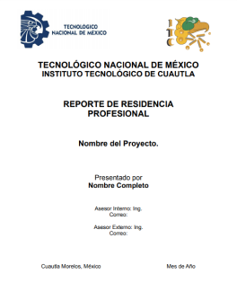

Programa de mantenimiento software MP
Cynthia Parker, Jordan Tucker
07/18/2021
Este documento abarca la implementación de un software denominado mantenimiento preventivo (MP) para desarrollar planes, y programas de mantenimiento de equipos e instalaciones de cualquier empresa para mantener en forma documentada y organizada las actividades realizadas, evitando paros no planeados en la producción.